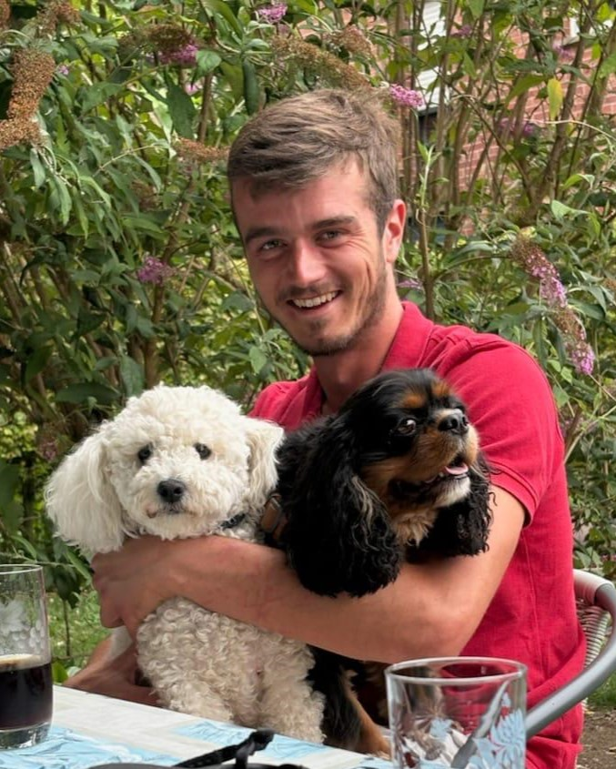

Coaching de vie · Soutien scolaire · Remise en forme à Béthune
Nous avons tous besoin d'aller bien. Laissez-moi vous aider pour ça.
Je m’appelle Pierre, coach à domicile à Béthune et dans les communes alentour. Après des années auprès des enfants, des familles et des élèves en difficulté, j'accompagne aujourd'hui celles et ceux qui veulent avancer — à leur rythme, avec quelqu'un qui prend le temps de les écouter et de les accompagner, avec bonne humeur et optimisme.

Une écoute avant tout
Dix ans d'animation, trois ans d'enseignement, une formation en soins et une autre en informatique : un parcours atypique qui m'a appris une chose — apprendre à s'écouter est primordial pour aller bien.
Empathie
Une hypersensibilité que j'ai longtemps vue comme un obstacle, et qui est devenue ma plus grande force pour comprendre ce que vivent les gens.
Pédagogie
Trois ans à expliquer les maths à des élèves qu'on avait déjà classés « en échec ». J'ai appris à repartir des bases, sans jamais juger.
Terrain
Enfants, adolescents, personnes âgées, personnes en situation de handicap : une expérience humaine construite depuis des années.
Joie de vivre
Une bonne humeur et un enthousiasme naturels que j'aime transmettre — parce qu'on avance toujours mieux avec le sourire.
Ce que je propose
Des accompagnements simples, à domicile ou en pleine nature, pensés pour s'adapter à votre quotidien.
Coaching de vie
Un temps pour parler, prendre du recul et avancer concrètement sur ce qui vous pèse — travail sur la confiance en soi, changement de cap, motivation et bien-être au quotidien.
🌿 Les séances peuvent se dérouler chez vous ou en pleine nature, afin de se reconnecter à son environnement.Cours particuliers de maths
Reprendre les bases sans pression, pour que les maths cessent d'être une source d'angoisse mais deviennent un atout — niveau primaire et collège.
Soutien familial
Des conseils pratiques et concrets aux parents pour les moments du quotidien avec les enfants — un regard extérieur bienveillant, sans jugement.
Remise en forme progressive
Marche, renforcement musculaire au poids du corps : reprendre une activité physique à son rythme, seul ou en petit groupe.
🌿 Marches et séances en extérieur, en pleine nature.« J'aimerais dédier ma vie professionnelle au bien-être des gens, les guider vers une vie plus joyeuse avec une plus grande confiance en soi et en l'avenir. » — Pierre Skibinski
Envie d'en parler ?
Un premier échange, sans engagement, pour voir ensemble ce qui peut vous aider.